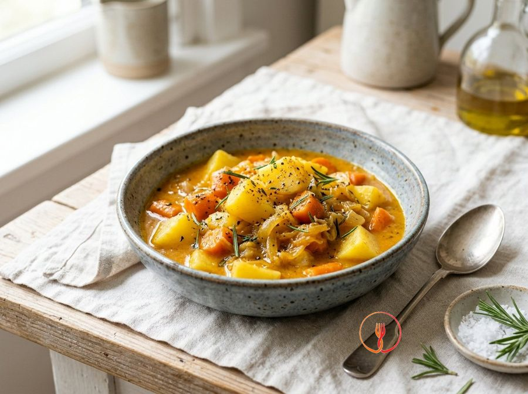

Rustic Stewed Potatoes and Carrots with Rosemary
A substantial and fragrant side dish, perfect for accompanying simple meals. Slow cooking creates a natural creamy sauce thanks to the starches in the potatoes.
Ingredients
- Yellow potatoes600 g
- Carrots400 g
- Golden onion1 pcs
- Garlic1 clove
- Fresh rosemary2 sprigs
Allergens
None of the 14 main allergens in the ingredients.
Method
- Begin by washing, peeling and cutting the potatoes and carrots into cubes of about 2 centimetres to ensure even cooking.
- Finely slice the golden onion and crush the garlic clove, leaving it whole so it can be easily removed later.
- In a large casserole, heat two tablespoons of extra virgin olive oil and soften the onion with the garlic and rosemary leaves for about 3 minutes.
- Add the carrots and potatoes to the pot, turning up the heat slightly to brown them on the outside for about 5 minutes, stirring often.
- Cover the vegetables with hot water (or a simple vegetable stock) until half-submerged and season with salt and pepper.
- Put the lid on and leave to cook over a gentle heat for about 20 minutes, until the vegetables are tender when pierced with a fork.
- Remove the lid for the final 5 minutes of cooking to let the liquid reduce and form a delicious thick emulsion.
- Turn off the heat when the potatoes start to break down slightly at the edges, a sign that the creamy sauce is ready.
- Leave the side dish to rest for a couple of minutes before serving, so the flavours settle perfectly.
Nutrition facts (estimate)
| Per serving (250 g) | Per 100 g | |
|---|---|---|
| Energy | 690 kJ / 165.0 kcal | 276.0 kJ / 66.0 kcal |
| Protein | 3.0 g | 1.2 g |
| Carbohydrates | 32.0 g | 12.8 g |
| of which sugars | – g | – g |
| Fat | 4.0 g | 1.6 g |
| of which saturates | – g | – g |
| Fibre | – g | – g |
| Salt | – g | – g |
AI estimates based on average CREA / USDA data: indicative only, not a substitute for medical or dietitian advice.
Open the recipe in the app for the shopping list, ingredient sheets and nearby shops.